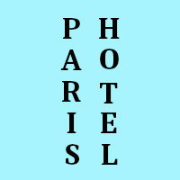

The Text tool adds text to your image in a new layer. Text can be edited directly on canvas. A text tool editor, which shows up on top of the canvas above the text box, allows you to quickly change some of the text characteristics (for selected text or newly typed text only).
As soon as you type your text, the text box appears on the canvas in a rectangular frame. If you draw the rectangular frame first, the text is automatically adapted to the frame size. You can enlarge this frame as you do with rectangular selections.

Right clicking on the text opens a context menu that allows you to copy, cut, paste, open a text file, change text orientation, and other text related commands.
You can also use a separate Text Editor window by checking the Use editor window option in the Tool Options dialog. You can also use the Text Options dialog to change the font, color and size of your text, and justify it, interactively.
In this chapter, tool options will be described. To know how to use the Text tool, please refer to text management.
There are different possibilities to activate the tool:
-
From the main menu: → .
-
By clicking the tool icon in the Toolbox.
-
By pressing the T keyboard shortcut.

Normally, tool options are displayed in a window attached under the Toolbox as soon as you activate a tool. If they are not, you can access them from the main menu through → → which opens the option window of the selected tool.
- Font
-
Click on the fonts button to open the font selector of this tool, which offers you a list of installed X fonts.
At the bottom of the font selector you find some icons which act as buttons for:
-
resizing the font previews,
-
selecting list view or grid view,
-
opening the font dialog.
Choose a font from the installed fonts. When you select a font it is interactively applied to your text.
![[Tip]](images/tip.png)
Tip You can use the scroll wheel of your pointing device (usually your mouse) on the fonts button in order to quickly change the font of your text (move the pointer on the fonts button, and don't click, just use the wheel button).
-
- Size
-
This control sets the size of the font in any of several selectable units.
- Use editor window
-
Use an external editor window for text editing instead of direct-on-canvas editing.
- Show on-canvas editor
-
Show a text tool editor on top of the canvas above the text box, which allows you to quickly change some of the text characteristics (for selected text or newly typed text only).
- Antialiasing
-
When enabled, this will render the text with much smoother edges and curves. This is achieved by slight blurring and merging of the edges. This option can radically improve the visual appearance of the rendered typeface. Caution should be exercised when using anti-aliasing on images that are not in RGB color space.
- Hinting
-
Uses the index of adjustment of the font to modify characters in order to produce clear letters in small font sizes.
- Color
-
Color of the text that will be drawn next. Defaults to black. Selectable from the color picker dialog box that opens when the current color sample is clicked.
Tip You can also click-and-drag the color from the Toolbox color area onto the text.
- Style
-
This allows you to select how to style the text. The following choices are available.
- Filled
-
The inside of each character is filled with a solid color defined by the Color option. This is the default.
- Outlined
-
The edges of each character are painted based on the settings below, and the inside is left transparent.
- Outlined and filled
-
A combination of the above two settings. The inside of each character is painted using the fill color.
Outline Options
Settings for Outlined and Outlined and filled.
- Outline Direction
-
Determines the direction from which the outline grows.
- Outer
-
The outline grows outward from the edges of each character.
- Inner
-
The outline grows inward from the edges of each character.
- Center
-
The outline is centered on the edges of each character.
- Solid color
-
If this is selected, the outline is painted in the solid color chosen here. To choose a color click the color button.
- Pattern
-
If this is selected, the outline is filled with the pattern chosen here. To choose a pattern click the button showing the current pattern, or start typing a name in the text field next to it; it will show patterns starting with the letters you entered.
Patterns work best with larger size outlines. This can be set by changing Line width.
- Antialiasing
-
Curves and lines at an angle may look jagged. When enabled, this setting makes this smoother.
- Line width
-
This sets the width of the text outline. By default, this is measured in pixels, but you can select a different measurement unit from the drop-down list.
- Cap style, Join style, Miter limit, Dash pattern, Dash preset
-
See Path stroking styles.
- Justify
-
Causes the text to be justified according to any of four rules selectable from the associated icons.
- Indent
-
Controls the indent spacing from the left margin, for the first line.
- Adjust line spacing
-
Controls the spacing between successive lines of text. This setting is interactive: it appears at the same time in image text. The number is not the space between lines itself, but how many pixels must be added to or subtracted from this space (the value can be negative).
- Adjust letter spacing
-
Controls the spacing between letters. Also in this case the number is not the space itself between letters, but how many pixels must be added to or subtracted from this space (the value can be negative).
- Box
-
Concerns the text box. The associated drop-down list offers two options:
Dynamic: default option. The size of the text box increases as you type. Text may go out of the image. You have to press the Enter key to add a new line. The indent option indents all lines. If you increase the box size, the option turns to "Fixed".
Fixed: you must enlarge the text box first. Else, usual shortcuts are active! The text is limited by the right side of the box and continues on next line. This is not true new line: you must press the Enter key to add a real new line. The text may go out the lower border of the image. The indent option works on the first line only.
- Language
-
The text language may have an effect on the way the text is rendered. If you enter a letter in this field, you get a list of all available languages whose names begin with this letter. Select the language in which you are entering your text.
Right clicking on this field opens the context menu which allows you to paste language names from the clipboard.
This text editor is only available if the Use editor window option is checked in Tool Options.
As soon as you start writing, a Text layer is created in the Layer
Dialog. On an image with such a layer (the image you are working on, or
a .xcf image), you can resume
text editing by activating this text layer then clicking on it (double
click). Of course, you can apply to this text layer the same functions
you use with other layers.
To add another text to your image click on a non-text layer: a new Text Editor will appear and a new text layer will be created. To pass from a text to another one activate the corresponding text layer and click on it to activate the editor.
The Text Editor options
All these options are also in the text context menu.
Vertical text (top-to-bottom writing) is supported and particularly useful for East-Asian writing systems, but also for anyone wishing to design fancy vertical text.
- Load text from file
-
Text can be loaded from a text file by clicking the folder icon in the text editor. All the text in the file is loaded.
- Clear all text
-
Clear all the text.
- From left to right
-
This option causes text to be entered from left to right, as is the case with most Western languages and may Eastern languages.
- From right to left
-
This option allows text to be entered from right to left, as is the case with some Eastern languages, such as Arabic (illustrated in the icon).
- Vertical, right to left (mixed orientation)
-
Text is written top-to-bottom in columns, from right to left, and is rotated 90° clockwise.

- Vertical, right to left (upright orientation)
-
Text is written top-to-bottom in columns, from right to left, upright.

- Vertical, left to right (mixed orientation)
-
Text is written top-to-bottom in columns, from left to right, and is rotated 90° clockwise.

- Vertical, left to right (upright orientation)
-
Text is written top-to-bottom in columns, from left to right, upright.

- Use selected font
-
Default doesn't use the font you have selected in the Options dialog. If you want to use it, check this option.
![[Note]](images/note.png)
Note See also Section 2, “Text”